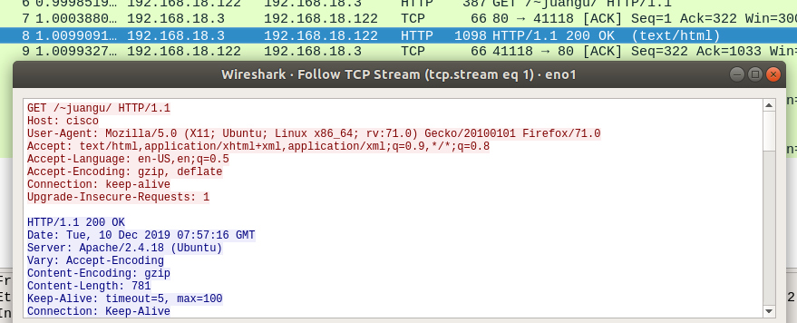
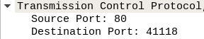
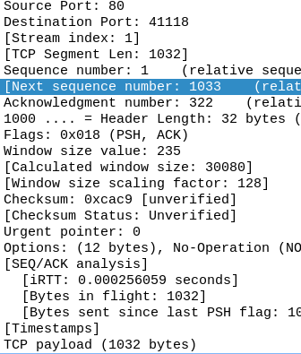
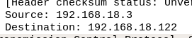
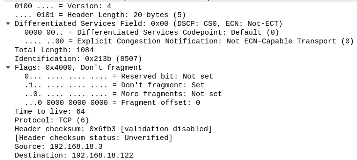
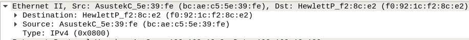
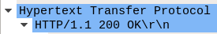
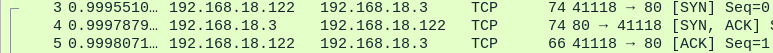
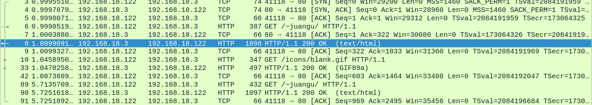
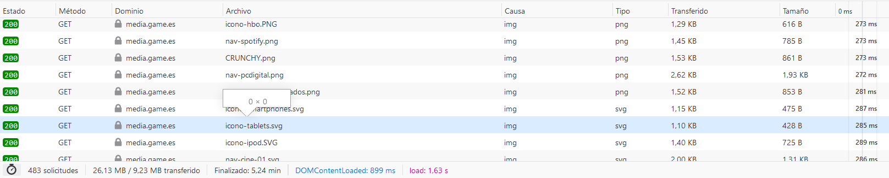

Ejercicios HTTP
Ejercicio 1
Lanza el sniffer wireshark y realiza una petición web.
Aquí vemos el paquete HTTP con su respectivo follow a TCP Stream.
¿Qué protocolos de transporte, red y enlace utiliza HTTP?
Los protocolos que utiliza son:
- En la de Trasporte, Ethernet2
- En la de Red, Ipv4
- En la de enlace, TCP
- Y HTTP
¿Qué puertos están implicados en la capa de transporte?
Están implicados el 80 como origen, y el 41118 como destino.
¿Qué otros datos puedes obtener de esta capa?
Dentro de esta capa, se puede observar también, el tamaño del payload (el encapsulado), el número de secuencia, el tamaño de la ventana, etc...
¿Cuáles son la direcciones IP implicadas en dicha petición?
Están implicadas estas IP´s, la 192.168.18.3 como origen y la 192.168.18.122
¿Qué otros datos puedes obtener de esta capa?
Podemos observar, el total de la longitud, la identificación, el tiempo de vida, etc..
¿Cuáles son la direcciones LAN implicadas en dicha petición?
Son las siguientes, f0:92:1c:f2:8c:e2 y bc:ae:c5:5e:39:fe
¿Qué otros datos puedes obtener de esta capa?
La información del destino y del origen.
¿Queprotocolo se utiliza HTTP/1.0 o HTTP/1.1?
El HTTP/1.1
Filtrando TCP, busca el acuerdo en tres bandas entre cliente y servidor. Interprétalo.
El cliente conecta con el servidor, el servidor contesta y le manda la conexión mientras que le dice que le ha llegado el mensaje, y ahí le dice el cliente le dice que recibe la conexión, y comienza.
Ejercicio 2
Utililizando la captura del sniffer anterior indica el número deobjetos implicados en la petición web.
Podemos observar, que en toda la captura del sniffer, hay involucrados 6 objetos,
¿Qué tipo de objetos son los implicados?
Son objetos HTTP, como la petición del icono, la de la propia web, las distintas imágenes qeu haya en la página, etc..
Realiza el mismo ejercicio pero usando firebug.
Podemos observar la petición de varios objetos, que, en este caso, en esta capturas, todo son imágenes de la página game.es
También podemos observar el tiempo que se ha tardado en responder a esas peticiones (a la derecha de la imagen.)